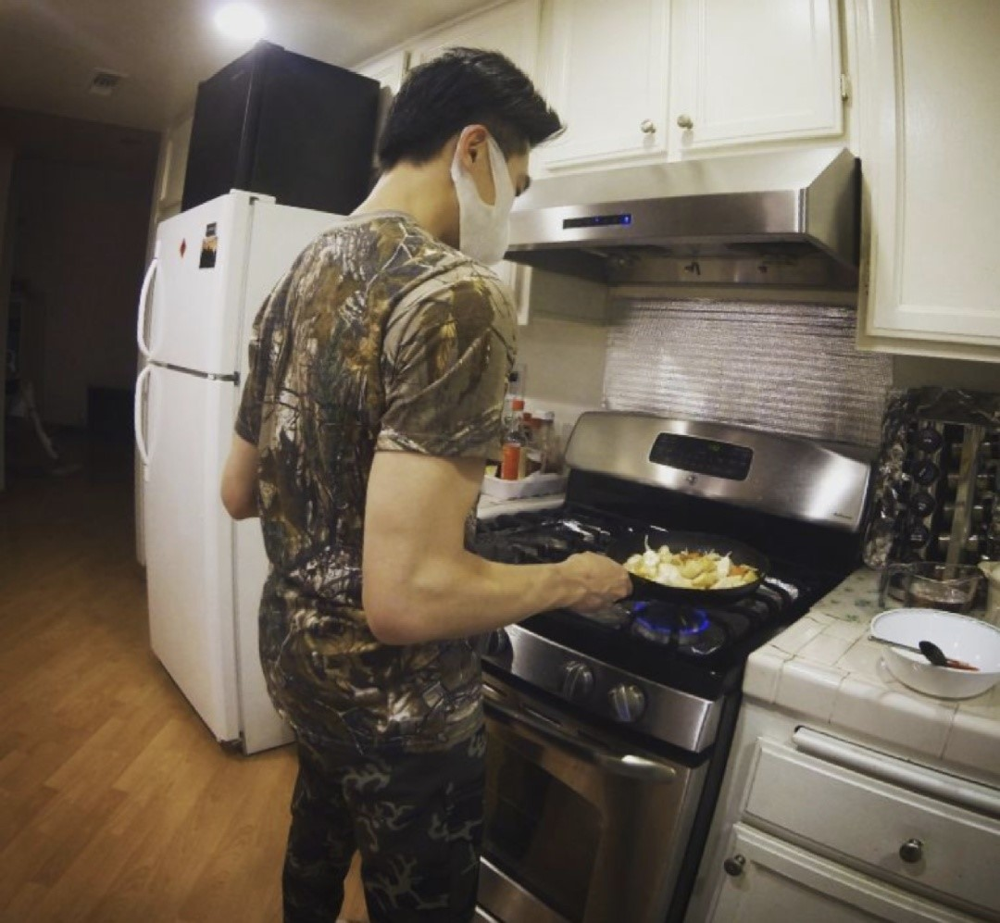

About Me
I have a diverse range of product design experience spanning consumer-facing products and internal worker tools. My hybrid background in UX, engineering communication, and business acumen lets me adapt across design contexts—from early-stage research to high-fidelity delivery.
I lead with user empathy, leverage data to make strategic decisions, and value diverse perspectives to bring balanced business thinking to every project. When I'm not designing, you'll find me perfecting my espresso technique, cooking, or exploring new spots with a camera.

What I Bring
Fluent in modern design tools and familiar with front-end development — closing the gap between design and engineering.
Design decisions grounded in business goals, user data, and measurable outcomes.
Empathy-driven design process with a focus on long-term user satisfaction and trust.
Constantly evolving — staying current with industry trends, methods, and emerging technologies.